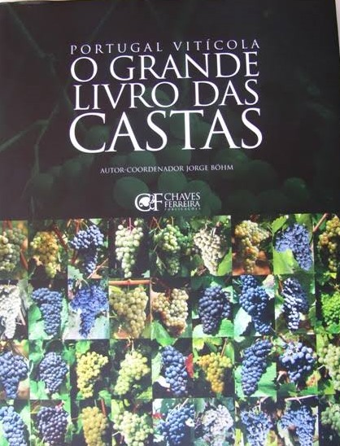
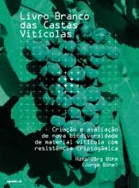

Our products01
Our products01

All of Plansel at a glance
What you'll find at Plansel.
From the wine in your glass to the vine in the ground: a family business that has supported wineries for 50 years.
- 01Wine eventsEvents in Portugal and abroad, new every week.
- 02Buy Plansel wine onlineRed, white and rosé from the Alentejo, direct from the estate.
- 03Buy vine plantsCertified vines and clones from Viveiros Plansel.
- 04Stay & celebrate at the QuintaApartments, motorhome parking and spaces for weddings, companies and parties, with or without staff.
- 05Tastings with Dorina & LuísaBookable for a fee: we come to your event, hotel or trade fair, in Europe and worldwide, also as a show tasting. Both are official tasters at Mundus Vini.
- 06Sommelier trainingWSET courses to the London standard, internationally recognised, in Portuguese and English.
- 07Bottling & consultingSmall wineries bottle with us and get advice from three winemakers with German and international expertise.
- 08Harvester with driverMachine harvesting for grapes and olives: we provide harvesters with an experienced driver.
- 09Office, marketing & AI as a serviceAccounting, Instagram and a website with shop for small wineries. Plus Plansel Technology: AI applications and training for owners.
 Events02
Events02
What's happening in Portuguese wine this week.
Wine festivals, tastings, fairs and restaurant tips. Updated every Thursday, with a direct link to the organiser.
Portugal
- 4–6 Dec 2026 · Vila de FradesVITIFRADES
- 16 Jan 2027 · VidigueiraEuropean City of Wine 2026 gala
- 14–21 Feb 2027 · PortoWine & Travel Week
- 18–21 Feb 2027 · PortoEssência do Vinho
- Late Feb 2027 · PortoSimplesmente Vinho
- 30 Apr–2 May 2027 · MelgaçoFesta do Alvarinho e do Fumeiro
- 29 May 2027 · Quinta da PlanselPlansel Rosé Party
- 2–3 Jul 2027 · LamegoDouro & Porto Wine Festival
- 13–19 Jul 2027 · Ponte de LimaFesta do Vinho Verde
- Mid-Sept 2027 · Peso da RéguaFesta das Vindimas do Douro
International
- Feb 2027 · ParisWine Paris
- Mar 2027 · DüsseldorfProWein
- Apr 2027 · VeronaVinitaly
- Spring 2027 · Neustadt/WeinstrasseMundus Vini
- May 2027 · LondonLondon Wine Fair
Restaurant tips
- ÉvoraRestaurante Fialho
- Vila Nova de MilfontesTasca do Celso
- LisbonTaberna da Rua das Flores
- PortoProva
- Montemor-o-NovoWine & Dine at Quinta da Plansel
Dates without guarantee. Please check with the organiser before you travel.
Submit an event
Advertisement · 970 × 250 billboard · via symplr
- 1975First vineyards in Montemor-o-Novo
- ~50 %of Portugal's certified vines come from Plansel clones*
- 50+years of clonal selection of Portuguese varieties
- 400.000 lof wine a year from Quinta da Plansel
- WSETInternational Wine School on the estate
* Company figure from Plansel, quoted by Vinetur, 9 Nov 2026
 Wines03
Wines03
Quinta da Plansel · Wines
Fine Portuguese wine. Traceable down to the vine.
Dorina, a Geisenheim-trained winemaker, has made wine from her father's vines since 1993. For every bottle we know which clone it came from.


AI recommendation
Plansel Tinta Barroca
Tinta Barroca brings dark fruit and soft tannins. It stands up to meat and rich sauces.
Reasoning: Full-bodied + meat → structured red
Order in the shop Experiences04
Experiences04
Wine tourism · Quinta da Plansel
Top experiences, one hour from Lisbon.
Cellar tastings, wine & dine among the vines, stays at the quinta and the Plansel Gin Experience.


 Academy05
Academy05

Plansel International Wine School
Sommeliers learn where the wine is made.
Official WSET courses to the London standard, taught by WSET educator Wilmy Matton, winemaker Dorina Lindemann and visiting professors. Between nursery, lab and cellar.
- WSET Level 1 · WinesIntroduction for hospitality and wine lovers1 day
- WSET Level 2 · WinesGrape varieties and regions of the world3 days
- WSET Level 3 · WinesFor aspiring sommeliers5 days
- Masterclass PortugalClones, terroir, cellar. With the Böhm Archive2 days
info@planselwineschool.com · +351 266 898 921
 Science06
Science06
Plansel Science · The Böhm Archive
The science behind every bottle.
Plansel stands for “Plantas Seleccionadas”. Behind the name is a research programme that works with universities and prepares Portugal's grape varieties for tomorrow's climate.


“Portugal needs its own research, so that it does not become dependent on varieties that do not suit its soil and climate.”
Comendador Jorge (Hans Jörg) Böhm, born in 1938 in Neustadt an der Weinstraße, comes from a German family of wine merchants. In 1961 his sailing boat ran aground near Cascais, and he fell in love with Portugal. By 1969 the family business under his leadership was the largest importer of Portuguese wine in Germany.
After studying vine breeding in Geisenheim, he founded Viveiros Plansel in 1981 and began the first systematic clonal selection of Portuguese grape varieties, with the Universidade de Évora and today's INIAV. More than 30 research projects later, Plansel clones are recognised in California, New Zealand and Australia, and a large share of Portugal's vineyards grows on Plansel vines, sold through Viveiros Plansel and Vinverus.
In 2006 the President of the Portuguese Republic appointed him Comendador de Mérito Agrícola.

OIV Award 2010The standard reference · Chaves Ferreira, 2007
O Grande Livro das Castas
The great book of Portugal's grape varieties. Edited by Comendador Jorge Böhm and honoured by the International Organisation of Vine and Wine (OIV). It describes the country's native varieties, from which the Plansel wines are also made.
PT · OriginalAvailable
DE · ENAI translation, pre-order
FR · ES2027
中文 · PL2027
-

New · 2026Livro Branco das Castas VitícolasNew fungus-resistant varieties: how Portugal can use less crop protection. -
 EnglishThe Portuguese Vineyard and Wine BookHistory, grape varieties, terroir, wine regions and food with wine.
EnglishThe Portuguese Vineyard and Wine BookHistory, grape varieties, terroir, wine regions and food with wine. -
 Dinalivro · 2010D. João, Marquês de Montemor-o-NovoThe story behind our Marquês de Montemor wine range.
Dinalivro · 2010D. João, Marquês de Montemor-o-NovoThe story behind our Marquês de Montemor wine range.
2006Comendador de Mérito Agrícola, appointed by the President of the Republic
2008Best viticulture expert, Revista de Vinhos
2 × OIVBook awards from the International Organisation of Vine and Wine
2013Plaque of honour, Universidade de Évora
2014Medal of honour, Academia das Ciências de Lisboa
Clonal selection
The healthiest, most expressive vines are chosen from old vineyards and propagated.
Resistant varieties
Vines that need less crop protection. Böhm sees this as the industry's most important task.
Climate change
Plant material for hotter summers and less water, tested in the Alentejo.
Old varieties
Almost forgotten Portuguese grape varieties are rediscovered and tested in wine.
Ask the Böhm Archive
AI prototypeAn AI trained on 50 years of Plansel research answers technical questions in your language and cites the source in the book. Choose a sample question:
A clone is the offspring of a single, especially good vine. All plants of a clone are genetically identical. Plansel looks for such vines in old vineyards, tests them for years for health, yield and wine quality, and propagates only the best.Source: Livro Branco das Castas Vitícolas, ch. Clonal selection (sample reference)
 Technology07
Technology07

Plansel Technology
We bring wineries into the age of AI.
AI is changing sales, marketing and admin faster than a small winery can keep up with on the side. We put the tools from Anthropic, Google Gemini and OpenAI to work for you and show you how they work.
The proof is right in front of you: This website uses AI itself. The sommelier recommends wines, the Böhm Archive answers technical questions, and every text is available in seven languages.
Request a consultationTailored AI training
For owners and teams, tailored to your business: we work with your own wines, customers and processes. In German, Portuguese or English, at the Quinta or at your place.
- Writing prompts that really work
- Your own AI assistants for sales and office
- Data protection and safe use of AI
AI applications for your winery
- AI sommelier that advises every shop customer personally
- Personalised emails and newsletters for every customer
- AI agent answers guest and booking enquiries around the clock
- Wine descriptions, labels and website automatically in 7 languages
- Instagram posts and reels from your photos, captioned by AI
- Sales and stock forecasts from your own data
- Invoices and receipts are read, checked and pre-booked
Outsourcing
You make wine, we do the rest: website with shop, social media, accounting. One contact person, one fixed monthly price.
 Wine Letter08
Wine Letter08
The Plansel Wine Letter · every Thursday
Five minutes that expand your wine knowledge.
Free, in your language. With content from the Wine School and the Böhm Archive.
- 01Wine events worldwide in the next 30 days
- 02Wine dates in Portugal
- 03A winery of the week
- 04Restaurants with a good wine list and Plansel
- 05Hotels in Portugal where you can drink Plansel
- 06A lesson from the Wine School
 Network09
Network09
Network
Who we work with.

Universidade de ÉvoraJoint research since the first wines in 1993
INIAVNational Institute for Agricultural and Veterinary Research
WSET LondonCertified Wine School courses
MeiningerMedia partner for the German-speaking wine market
 Family10
Family10
The Böhm-Lindemann family
A family that has lived from wine for generations.
A mishap at sea became a life's work: three generations turned vines, research and a cellar into Quinta da Plansel.
-
Jorge BöhmFounder, vine breeder, Comendador
-
 DorinaWinemaker and heart of the estate
DorinaWinemaker and heart of the estate
-
 JúliaMarketing, social media and finance
JúliaMarketing, social media and finance
-
 LuísaWinemaking and international sales
LuísaWinemaking and international sales
- 18th c.
The Böhm family trades in wine and becomes one of Germany's leading wine importers.
- 1961
Jorge Böhm's sailing boat runs aground in the port of Cascais. He stays, gets to know the country and sees the potential of the Alentejo's grape varieties.
- 1975
He buys his first land near Montemor-o-Novo. It becomes the Viveiros Plansel nursery.
- 1990s
His daughter Dorina, a Geisenheim-trained winemaker, comes to Portugal with her husband Thomas Lindemann.
- 1993
With Paulo Laureano, the first wine is made in the University of Évora's experimental winery. Its name: Plansel, short for “Plantas Seleccionadas”.
- 1998
Over five years, Dorina and Thomas built their own winery: Quinta da Plansel.
- Today
Daughters Júlia and Luísa help run the business. The Quinta makes 400,000 litres a year across five wine ranges.
Source: Quinta da Plansel, “A história Lindemann-Böhm” and “A nossa equipa”.